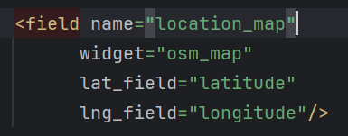
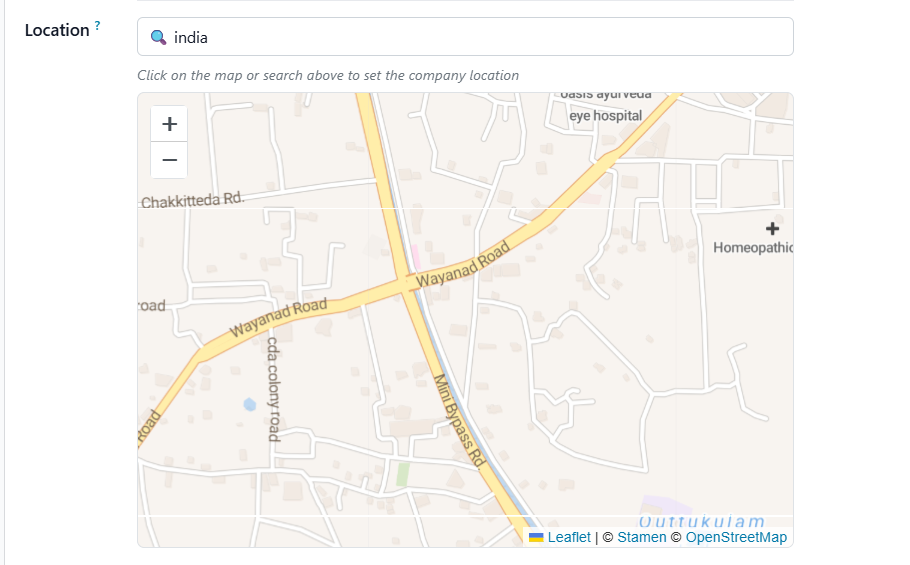

Map Widget is a powerful and user-friendly widget for Odoo that allows you to display location data directly inside form views using an interactive map interface. It enhances location management by providing a visual representation of geographical data such as employee locations, customer addresses, work sites, attendance check-ins, service areas, and more.

